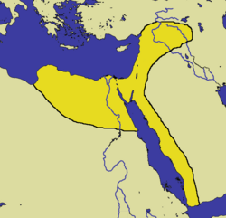
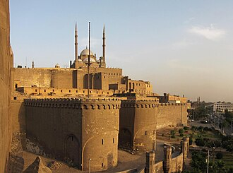
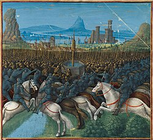
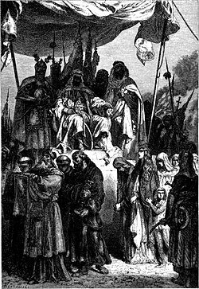
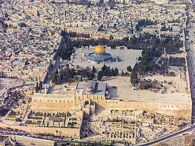
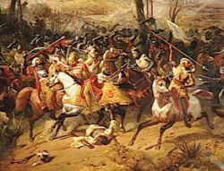
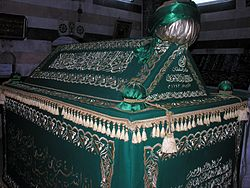

Selahaddin Eyyubi
Selahaddin Eyyubi (Arapça: صلاح الدين الأيوبي; Kürtçe:
سەلاحەدینی ئەییووبی, Selahedînê Eyûbî; y. 1137 – 4 Mart
1193), Eyyûbîler Devleti'nin kurucusu ve ilk
hükümdarıdır.1187 yılında Kutsal Topraklar'ı Haçlılardan
geri almak için bir ordu kurdu ve komutasındaki
ordusuyla beraber 4 Temmuz 1187 tarihinde gerçekleşen
Hıttin Muharebesi ile Kudüs Kralı Lüzinyanlı Guy'ın
ordusunun büyük bir bölümünü yok etti. 2 Ekim 1187'de
ise Kudüs'ü Haçlı kuvvetlerinden alarak bölgedeki 88 yıl
süren Katolik egemenliğine son verdi ve kenti İslam
dünyasına geri kazandırdı. Avrupalı Katolik Hristiyanlar
yaşadıkları bu yenilgiden sonra, Kudüs'ü tekrar
hâkimiyetlerine geçirebilmek amacıyla Üçüncü Haçlı
Seferi'ni düzenlediler.
Eyyûbî ailesinden olan Selahaddin, Zengî Hanedanı'nın
generallerinden amcası Şirkuh ile birlikte, Zengî
hükümdarı Nûreddin'in emriyle 1164 yılında Fâtımî
hâkimiyetindeki Mısır'a gönderildi. Asıl amaçları,
Şâver'in genç Fâtımî hâlifesi Âdıd'ın veziri olarak geri
getirilmesine yardımcı olmaktı. Şirkuh ve Şâver'in
yeniden göreve getirilmesinin ardından Şirkuh ile Şâver
arasında bir güç mücadelesi ortaya çıktı. Bu sırada
Selahaddin, Haçlı saldırılarına karşı kazandığı askerî
başarıların yanı sıra Hâlife Âdıd'a olan kişisel
yakınlığı sayesinde Fâtımî hükûmetinin saflarına
tırmandı. Şâver'in 1169'da bir suikasta kurban gitmesi
ve aynı yıl Şirkuh'un da ölmesinin ardından Âdıd,
Selahaddin'i vezir olarak atadı.
Sünni bir Müslüman olan Selahaddin, görev süresi boyunca
Şii mezhepli Fâtımî kurumunu baltalamaya başladı.
Âdıd'ın 1171'deki ölümünün ardından Selahaddin; Kahire
merkezli Şii Fâtımî Hâlifeliği'ni kaldırdı, Fâtımî
Devleti'ni yıktı ve İslam hilâfetini Bağdat'ta bulunan
Sünni Abbâsî Hâlifeliği'ne bağladı. Zengî
hükümdarı Nûreddin'in 1174'teki ölümünden kısa bir süre
sonra Selahaddin, Suriye'yi fethetmeye başladı ve
1175'te Zengîleri mağlup edip onları hâkimiyeti altına
aldı. Ardından Abbâsî hâlifesi Müstazî tarafından
"Mısır ve Suriye'nin Sultanı" ilan edildi. Tüm bu
gelişmeler, Selahaddin'in Mısır ve Suriye merkezli yeni
bir hanedanın lideri olduğu anlamına geliyordu.
Sultan Selahaddin, kendi bağımsız hanedanlığını kurduktan
sonra Kuzey Suriye ve Yukarı Mezopotamya'da daha fazla
fetih hareketi başlattı ve kısa sürede topraklarını
genişletti. Gücünün doruğunda iken devletinin sınırları
Mısır, Suriye, Irak, el–Cezire (Yukarı Mezopotamya),
Hicaz, Yemen, Kuzey Afrika'nın bazı bölgeleri ve
Nübye'yi kapsıyordu. Başta Kudüs Krallığı olmak üzere
bölgedeki Haçlı devletleriyle yoğun bir mücadele veren
Selahaddin, ilk olarak Temmuz 1187'de Haçlı kuvvetlerini
Hıttin Muharebesi'nde mağlup etti, ardından Ekim 1187'de
Kudüs'ü Haçlılardan geri aldı. Bu olaylardan sonra
Avrupalılar tarafından başlatılan Üçüncü Haçlı Seferi
sırasında Haçlı devletlerine karşı Müslüman askerî
harekâtına öncülük ve liderlik etti.7 Eylül
1191'de gerçekleşen Arsuf Muharebesi'nde İngiliz Kralı
I. Richard'a yenildiyse de, onunla yaptığı Yafa
Antlaşması sayesinde Kudüs'ü muhafaza
etti. Selahaddin, Haçlılarla antlaşma
yaptıktan kısa bir süre sonra 4 Mart 1193'te devletinin
başkenti Şam'da öldü ve yerine Mısır Sultanı olarak oğlu
Aziz Osman, Suriye Sultanı olarak ise diğer oğlu
el–Efḍal Alī geçti.
Selahaddin Eyyubi, 1187'de kutsal şehir Kudüs'ü 88 yıl
süren Hristiyan egemenliğinden kurtarıp Müslüman
dünyasına katmasıyla ve Üçüncü Haçlı Seferi'nde Haçlı
devletlerine karşı verdiği mücadelesiyle Müslüman, Kürt,
Arap ve Türk kültürlerinde önemli bir figür hâline
geldi, "kahraman" olarak görüldü ve "Kudüs Fâtihi"
olarak anıldı. Ayrıca Selahaddin Eyyubi'nin,
"iki kutsal caminin hizmetkârı" ünvanına sahip olan ilk
kişi olduğu düşünülmektedir.
Eyyûbî Devleti'nin kurulması

Kudüs'ün ele geçirilmesinden sonra Eyyûbî Devleti'nin
sınırları, 1189.
Selahaddin, 1169'da Mısır'ı fetheden sefer sırasında
amcası Şirkuh'u takip etti. Daha sonra Selahaddin, Halep
ve Edessa'nın bağımsız valisi Nûreddin Mahmud Zengî için
Mısır'ın valiliğini akrabasından devraldı.1171'de
ise Mısır'daki Şii Fâtımî Hâlifeliği'ne son vererek
İslam hilâfetinin Bağdat'taki Abbâsî Hâlifeliği'ne geçip
Sünniliğe dönüldüğünü ve Abbâsîlere bağlılığını ilan
etti.Nûreddin 1174'te öldüğünde halefleri üstünlük
için savaşırken, Müslüman devletlerden oluşan koalisyonu
dağıldı. Bunun üzerine Selahaddin hakiki varis olduğunu
iddia etti ve Mısır'ı kendisi için aldı, böylece
Mısır'ın tek yöneticisi durumuna geldi.Daha sonra
Suriye'yi fethetmeye başladı ve 1175'te Zengîleri mağlup
edip onları hâkimiyeti altına aldı. Nihayetinde de
Abbâsî hâlifesi Müstazî tarafından
"Mısır ve Suriye'nin Sultanı" ilan edildi. Tüm bu
gelişmeler, Selahaddin'in Mısır ve Suriye merkezli yeni
bir hanedanın, Eyyûbî Hanedanlığı'nın lideri olduğu
anlamına geliyordu ve bu olay, Müslümanların Haçlılara
karşı olan birleşmesinde de tarihî dönemeçlerden biri
oldu.
Selahaddin, Nûreddin Mahmud Zengî'ye hayatı boyunca bağlı
kaldı.Nûreddin'in 1174'te ölmesinden sonra ise
Selahaddin, bölgeyi hâkimiyeti altına aldıktan sonra
Nûreddin'in dul eşi İsmet Hatun ile evlenmek istedi ve
Şâfiî usulünce 1176'da nikâhla evlendiler.
Nûreddin'in yerine geçen on bir yaşındaki oğlu İsmâil,
henüz çocuk yaşta olduğu için annesinin etkisi altında
kaldı ve bu da İsmet Hatun'un siyasete karışmasına yol
açtı. Onun Selahaddin ile evlenmesi, Haçlılara karşı
olan Müslüman birliğinin sağlanmasında önemli rol
oynadı.

Kahire Kalesi, Mısır'ın güç merkezi olarak hizmet
vermek üzere Selahaddin tarafından 1176–1183 yılları
arasında inşa ettirildi. İnşasından sonra kale, 700
yıl boyunca Mısır'daki hükûmetlerin merkezi ve
yöneticilerin ikametgâhı oldu.
Mısır Sultanı olduktan sonra Selahaddin, Nûreddin'in
Suriye'deki üstünlüğünü 1174'te Şam'ı ele geçirerek
tekrar etti. Daha sonra Müslüman dünyasını birleştirmeye
veya en azından bir tür faydalı koalisyon oluşturmaya
başladı. O'nun bu stratejisi, Orta Doğu'da Kudüs
Krallığı gibi Latin devletleri kurmuş olan Hristiyan
yerleşmecilere karşı kutsal bir savaş yürütebileceği
fikriyle karıştırılan güçlü bir harp ve diplomasi
karışımıydı.Selahaddin'in Müslüman liderler
arasındaki üstünlüğü, Sünni inancının başı olan
Bağdat'taki Abbâsî hâlifesinin onu Mısır, Suriye ve
Yemen'in "valisi" olarak resmen tanımasıyla pekişti.
Ancak Halep bağımsız kaldı ve Nûreddin'in oğlu
tarafından idare edildi. Mısır Sultanı Selahaddin,
güçlü bir Şii mezhebi olan Haşhaşîlerin suikast
teşebbüslerinden iki defa kurtulduğu için daha şahsi
riskler de vardı.Selahaddin ise bu
duruma, Suriye'de Haşhaşî kontrolündeki Masyaf Kalesi'ne
saldırarak ve çevresini yağmalayarak karşılık
verdi.
Hıttin Muharebesi (1187)

Hıttin Muharebesi'nin bir tasviri.
Selahaddin, 1177'deki Montgisard Muharebesi yenilgisinden
10 yıl sonra, 1187 yılında, bütün gücüyle Kutsal
Topraklar'da hüküm süren Latin Haçlı krallıklarına
yöneldi.Haçlı komutanı Renaud de Châtillon'ın
nefret uyandıran eşkıyalık hareketleri Selahaddin'i çok
kızdırmıştı. Selahaddin, Kudüs Krallığı'na karşı
harekete geçip onları Filistin'den atmaya karar verdi ve
Mısır, Suriye ve el–Cezire'ye (Yukarı Mezopotamya) haber
gönderip Haçlı devletlerine, özellikle Kudüs Krallığı'na
karşı bir cihat yapmak için askerlerin komutası altında
birleşmelerini istediğini bildirdi. Bu ülkelerden çok
sayıda süvari ve piyade, gönüllü olarak Selahaddin'in
devletinin başkenti Şam'a gelmeye başladı.
Selahaddin, Kudüs Kralı Lüzinyanlı Guy'ı ve ordusunu
Filistin'in kuzeyine, Tiberya yakınlarındaki Hıttin köyü
civarına kadar getirmeyi başardı. Hıttin tepesi su
kuyularıyla ünlü bir yerdi. Çok önceden buradaki
kuyuları tutan Selahaddin, böylece Haçlılara su
bırakmamayı planladı.[94] Selahaddin, Hıttin'e yaklaşık
20.000 asker getirmeyi başardı. Haçlılar ise takriben
15.000 piyade ve 1.300 şövalye toplayabilmişti.[81]
Haçlılar sayıca azdı ve ciddi derecede su sıkıntısı
çekiyorlardı; üstelik bol miktarda erzağı olan Müslüman
ordusu, düşmanın susuzluğunu daha da artırmak için kuru
otları ve çalıları ateşe verdi.
Kudüs ordusu, günlerce süren yürüyüşten sonra 4 Temmuz
1187'de tükenmiş ve susuzluktan bitkin düşmüş bir hâlde
Selahaddin ile karşılaştı. Bundan sonra Haçlılar geri
dönemediler ve Selahaddin'in karşısına çıkmak zorunda
kaldılar. Haçlı ordusunun komutanlığında Trablus Kontu
III. Raymond, İbelinli Balian ve Renaud de Châtillon da
vardı. Haçlı düzeni savaş sırasında kargaşa içinde
ayrıldı. Trabluslu Raymond liderliğindeki bir süvari
kuvveti Müslüman hatlarını aşıp kaçmayı başardı, fakat
ordunun büyük bir kısmı için firar yoktu ve Selahaddin,
Haçlıların şimdiye değin topladığı en büyük orduya karşı
büyük bir zafer kazandı.
Hıttin Muharebesi sonrasında Kudüs Kralı Lüzinyanlı Guy,
Haçlı komutanı Renaud de Châtillon ile birlikte
Selahaddin Eyyubi'ye esir düştü. Selahaddin, Renaud'u
kafasını keserek öldürdü. Çünkü öncesinde Renaud,
Müslümanlara karşı şiddet içerikli birtakım
uygulamalarda bulunmuş ve bu nedenle Müslüman yazarlar,
onu "İslam düşmanlarının başı" olarak görmüşlerdi. İdamı
gören Lüzinyanlı Guy, sıranın kendisine geleceğinden
korktu. Fakat Selahaddin yanına gelip
''Kral öldürmek, kralların bir âdeti değildir; fakat bu adam (Renaud) tüm sınırları aştı ve sonuçta
ona bu şekilde davrandım.''
deyip kendisine aynı muameleyi yapmadı ve ona iyi
davrandı.
Haçlıların bu savaşta verdiği kayıpların büyüklüğü,
Müslümanların Kudüs Krallığı'nın neredeyse tümünü ele
geçirmesini sağladı. Akka, Beyrut, Sayda, Nasıra,
Nablus, Yafa ve Aşkelon gibi yerler üç ay içinde
düştü.Selahaddin'in Haçlılara en büyük darbesi ise,
88 yıl Hristiyan Frankların elinde bulunan kutsal şehir
Kudüs'ü fethetmesi olacaktı. 20 Eylül 1187'de Kudüs'ün
kuşatılmasına başlandı.
Kudüs'ün Fethi

Selahaddin Eyyubi ve Kudüslü Hristiyanlar.
Kudüs Krallığı, Hıttin Muharebesi'nde büyük bir zayiat
vermiş ve şehrin savunması için de yeterli asker
kalmamıştı. Üstelik Selahaddin ve ordusu yavaş yavaş
Kudüs'e doğru ilerlemekteydi. Müslüman ordusu Kudüs'ün
surlarına dayandı. Şehrin savunması İbelin'in Baron'u
İbelinli Balian'a kalmıştı. Asker olan olmayan herkes
kılıç kuşanıp savunma duvarlarında yerini aldı.[96]
Selahaddin'in kuşatma kuleleri ve mancınıkları Kudüs
surlarını dövdü ve harap etti. İbelinli Balian ise
karşılık için uygun zamanı kolluyordu.Franklar,
Müslüman ordusuna karşılık vererek onları surlardan
geçirmemeye çalışıyordu.
Bu sırada Piskopos Heraklius, Balian'a yalvarıp kuşatmayı
bitirmesini emretti. Ancak Balian şehirde kılıç tutan
herkesi kuşatmaya dahil etmeye devam etti. Selahaddin'in
ordusu kayıplar verse de kuşatma sürdü. Kuşatma devam
ederken, 2 Ekim 1187 şafağı birkaç Müslüman Eyyûbî
süvarisi surların gerisinde beyaz bayrak salladı.
İbelinli Balian ve Selahaddin Eyyubi karşı karşıya geldi
ve Balian, 12 gün süren kuşatmanın ardından Kudüs'ü
Selahaddin'e teslim etti.

Kudüs'ün Fethi'nden sonra Selahaddin'in emriyle
Mescid-i Aksa da dahil olmak üzere pek çok kutsal
mekân, ritüellerle gül suyuyla arındırıldı.
2 Ekim 1187 Cuma günü Selahaddin Kudüs'e girdi ve cuma
namazını Kudüs'te kıldı. Haçlılar Kudüs'ten çıkıp
giderken Ortodoks ve Ya'kubi Hristiyanlar şehirde kaldı.
Ayrıca Yahudilerin de şehre yerleşmesine izin verildi.
Hristiyanlara ait kutsal yerlerin idaresi Ortodoks
Kilisesi'ne teslim edildi. Hristiyanların şehirde
ikametine izin verilmesine karşın, Kutsal Kabir Kilisesi
dışındaki bütün kiliseler camiye çevrildi.Yaşanan
olayların ardından Avrupalı Hristiyanlar, aralarında
İngiltere, Fransa ve Kutsal Roma krallıklarının da
bulunduğu yeni bir Haçlı seferi düzenlemeye başladılar.
Sefer; İngiliz Kralı I. Richard, Fransa Kralı II.
Philippe ve Alman İmparatoru Friedrich Barbarossa
tarafından üç ayrı kol hâlinde geliştirildi ve Mayıs
1189'da başladı.
Üçüncü Haçlı Seferi (1189–1192)
Kudüs'ün düşmesi, Avrupalı Hristiyanlar tarafından
finanse edilen ve 1189–1192 yılları arasında sürecek
yeni bir Haçlı seferine neden oldu. 1189 yılına
gelindiğinde Haçlı hâkimiyeti altında yalnızca üç kent
kalmış; ancak sağ kalan dağınık Hristiyanlar, zorlu bir
kıyı kalesi olan Sur'da toplanarak Latin karşı
saldırısının çıkış noktasını oluşturmuşlardı.[

Arsuf Muharebesi, 8 Eylül 1191
Kudüs'ün düşmesiyle derinden sarsılan Batılılarca
düzenlenen Üçüncü Haçlı Seferi, çok sayıda büyük soylu
ve ünlü şövalyenin yanı sıra, üç ülkenin krallarını da
savaş alanına çekti. Sefer uzun ve tüketici oldu.
Selahaddin'in orduları, 7 Eylül 1191'de Arsuf
Muharebesi'nde İngiltere Kralı I. Richard'ın ordusuyla
çatışmaya girdi ve Selahaddin ağır kayıplar verip geri
çekilmek zorunda kaldı. Haçlılar savaşı kazandı,
çekilmek zorunda kaldı. Haçlılar savaşı kazandı,
ama Müslümanların kayıpları mühim değildi. Akka ve Arsuf
yenilgileri Selahaddin'in ordusuna ciddi bir zarar
vermemiş olsa da, arka arkaya alınan iki mağlubiyet ve
ardından Ağustos 1192'de Yafa'nın I. Richard'a
kaybedilmesi, Selahaddin'in çağdaşları arasındaki askerî
itibarına zarar verdi.[98] Yafa Muharebesi (1192),
Üçüncü Haçlı Seferi'nin son askerî girişimi oldu. Kral
I. Richard, Yafa'yı işgal edip tahkimatlarını restore
ettikten sonra, Selahaddin ile şartları yeniden tartışıp
antlaşmaya vardılar. Buna göre Richard, Aşkelon'un
tahkimatlarını yıkmayı kabul ederken; Selahaddin,
Sur'dan Yafa'ya kadar Filistin kıyılarındaki Haçlı
kontrolünü tanımayı kabul etti. Haçlılar Doğu
Akdeniz'de ancak güvensiz bir toprak parçasına
tutunabildiler.
Selahaddin ve Richard'ın anlaşmasına göre Hristiyanların
Kudüs'e silahsız hacı olarak seyahat etmelerine izin
verilecek ve Selahaddin'in devleti sonraki üç yıl
boyunca Haçlı devletleriyle barış içinde olacaktı.
Kral Richard Ekim 1192'de dönüş yolculuğu için yelken
açtığında savaş sona ermişti. Böylelikle kutsal kent
sayılan Kudüs, Müslümanların hâkimiyetinde kalmış
oldu.
Ölümü

Selahaddin Eyyubi'nin Şam'daki Emevî Camii'ndeki türbesinin içi.
Selahaddin Eyyubi, Haçlılar ile çarpıştıktan ve Kral
Richard ile antlaşma yaptıktan kısa bir süre sonra
başkent Şam'a çekildi. 4 Mart 1193 tarihinde Şam'da
öldü.Mısır, Libya, Yemen, Filistin, Suriye,
Malatya, Ahlat, Doğu ile Güneydoğu Anadolu'ya ve Hemedan
ile Kuzey Irak'a kadar onun adına hutbe okundu.
Şam'daki Emevî Camii'nin bahçesindeki bir türbeye
gömüldü. Ölümünden sonra yerine yerine Mısır Sultanı
olarak oğlu Aziz Osman, Suriye Sultanı olarak ise diğer
oğlu el–Efḍal Alī geçti.
Selahaddin'in gömüldüğü Emevî Camii'nin bahçesindeki
türbe, başlangıçta birkaç sütun ve bir iç kemer dışında
çok az kalıntı bulunan, ayrıca bir okulu da içeren bir
kompleksin parçasıydı. Yedi yüzyıl sonra Alman
İmparatoru II. Wilhelm (1888–1918), mozoleye yeni bir
mermer lahit bağışladı. Ancak orijinal lahit
değiştirilmedi; bunun yerine ziyarete açık olan türbede
artık iki lahit vardır: Yan tarafa yerleştirilmiş mermer
lahit ve Selahaddin'in mezarını örten orijinal ahşap
lahit.